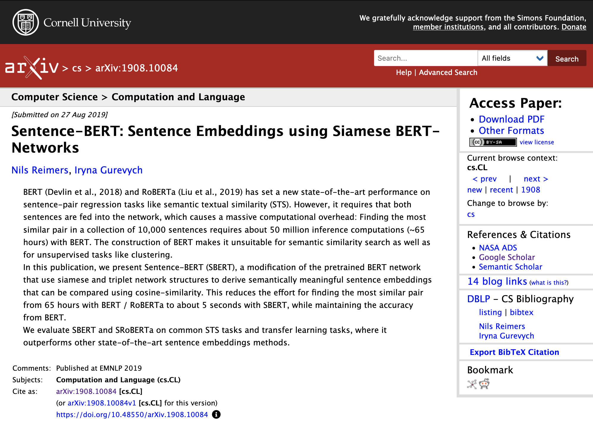

Using a pretrained model to generate embedding vectors and perform a similarity search
We will select a model that can transform a sentence or short snippet of text into a vector that represents the semantics of the text. This vector is called an embedding. We can use these embeddings to compare semantic meanings.
Sentence Transformers based on the paper https://arxiv.org/abs/1908.10084 
The Github of AI things. 🤗
https://huggingface.co/https://huggingface.co/blog/mteb
Breaks down sentence into pieces called tokens. Assigns each token a unique id number.
https://platform.openai.com/tokenizerhttps://medium.com/advanced-deep-learning/understanding-vector-similarity-b9c10f7506de
https://github.com/pgvector/pgvector Pgvector is an extension for postgres to support vector types and some similarity algorithms.
Comparing vectors is expensive, especially as the number of vectors grows.
Comparing vectors is expensive, especially as the dimensionality of vectors grows.
Embedding models have a limit on the number of tokens